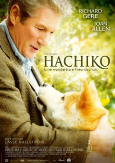
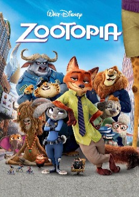

I’m a consultant, volunteer, storyteller who is passionate about sustainability. Through learning about technology and coding, I would love to contribute my skills and knowledge to make the world a better place.
Know more about me @winnie-chung.com| Poster | Descriptions |
|---|---|
|  | Hachiko: A Dog's Tale(2009)A schoolboy reports on his hero: Hachiko, his grandfather's dog. In a flashback, a puppy at a Japanese monastery is crated and sent to the US. The crate's tag tears, and when the puppy pushes his way out of the crate at the train station of a small Rhode Island town, Parker Wilson, a professor of music in nearby Providence, takes the dog home for the night. His wife isn't happy about it, but after failing to find the owner, she lets the dog stay. A Japanese friend reads the dog's tag - "Hachiko" or "Eight," a lucky number. Parker can't teach the dog to fetch, but the friend explains that the dog will forge a different kind of loyalty. Tragedy tests that loyalty. |
La La Land(2016)La La Land is a 2016 American musical romantic comedy film written and directed by Damien Chazelle. It stars Ryan Gosling as a jazz pianist and Emma Stone as an aspiring actress, who meet and fall in love in Los Angeles while pursuing their dreams.La-La Land —used as a nickname for Los Angeles, California. |
|
|  | Zootopia(2016)From the largest elephant to the smallest shrew, the city of Zootopia is a mammal metropolis where various animals live and thrive. When Judy Hopps (Ginnifer Goodwin) becomes the first rabbit to join the police force, she quickly learns how tough it is to enforce the law. Determined to prove herself, Judy jumps at the opportunity to solve a mysterious case. Unfortunately, that means working with Nick Wilde (Jason Bateman), a wily fox who makes her job even harder. |